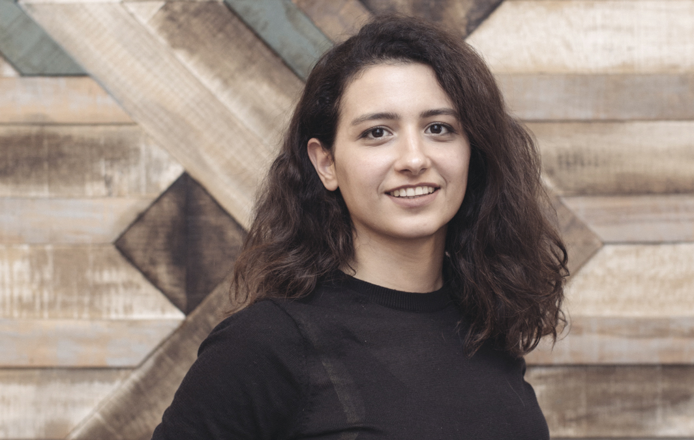
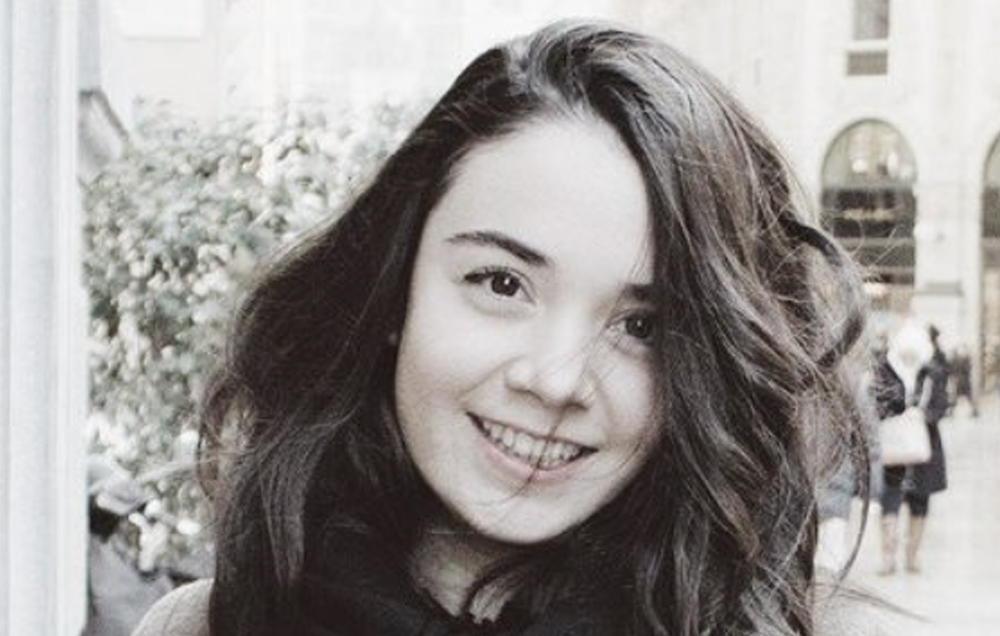

Kurucu Ortak
Oya Çitci
Y. Mimar, İTÜ
Mimarlık eğitimini İTÜ’de tamamlamıştır. Fikir ve içerik geliştirme, mekan ve deneyim tasarımı konularında çalışmaktadır. Kentin dinamikleri, tarihi ve kültürü ilgisini çeker, bu yüzden kent ile ilgili arşivleri karıştırmaktan, hikayeler ve bilgiler toplamaktan hoşlanır.
Oya sıklıkla üniversite ve kültür kurumlarındaki konferans, ders ve workshoplarda yürütücü ve konuşmacı olarak yer alır.
oya@pattu.net

Kurucu Ortak
Işıl Ünal
Kurucu Ortak
Peyzaj Mimarı, İÜ
Grafik Tasarımcı
Eğitimi sırasında ve sonrasında bir çok peyzaj mimarlığı ofisiyle çalıştı ve kentsel tasarım, peyzaj mimarlığı projelerinde yer aldı. 2009 yılında Oya ile PATTU Mimarlığı kurduğundan bu yana grafik tasarım ve sergi tasarımı üzerine çalışıyor.
isil@pattu.net